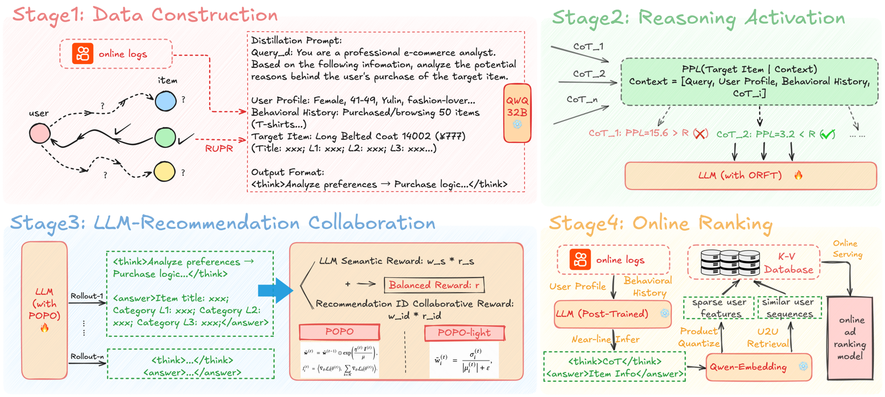
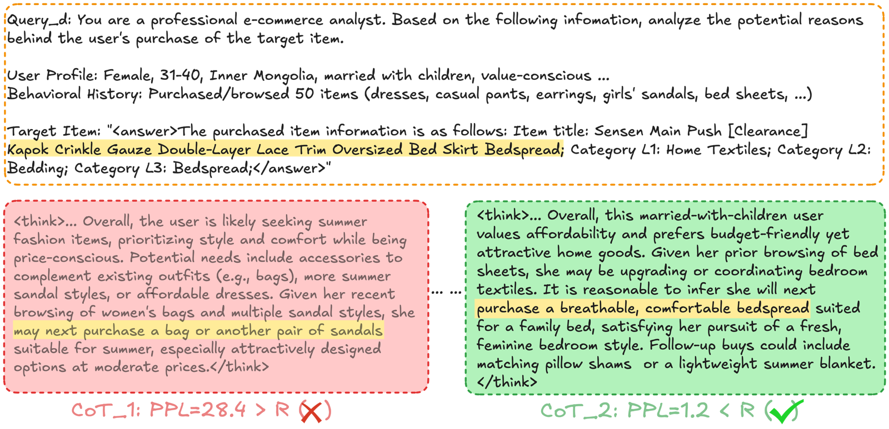

目录 · 9 节
1它到底在解决什么问题？2先看全景3造思维链：先给答案，再按困惑度筛4强化学习：两个奖励，权重自己调5离线结果：相对提升大，绝对值很低6线上怎么用，效果如何7我认为它的局限8一个推荐团队可以怎么试9一句话结论和评价分享 SHARE
做“大模型增强推荐”（LLM 产出特征喂给线上排序模型）的团队值得读。Taiji 不让大模型直接做推荐，而是让一个 7B 模型读用户画像和最近 50 条行为，推理“这个人接下来会买什么”，再把推理文本编码、量化成特征，交给线上广告排序模型。核心思想一句话：先用“知道答案再反推理由”的方式造思维链，按答案的困惑度筛掉一半，做监督微调；再用强化学习对齐，奖励由“预测商品和真实商品的文本相似度”与“线上排序模型给预测商品打的成交概率”两部分组成，两者的权重在训练中自动调整。线上一周 A/B，ADVV（广告主价值，衡量广告主的投放回报）涨 2.83%，平台收入涨 3.30%，行为稀疏的长尾用户涨 5% 以上。我认为线上收益可信，但离线指标的绝对值很低，而且奖励和评估用的是同一个排序模型，POPO（帕累托最优策略优化，即自动调奖励权重的方法）相对固定权重的提升在偏好指标上只有 0.74%。
它到底在解决什么问题？
先看一个示意场景。一位 31 到 40 岁、有孩子的女性用户，最近浏览和购买过 50 件商品：连衣裙、休闲裤、耳环、女童凉鞋、床单。她下一单买的是一条床罩。传统排序模型只看到一串商品 ID；大模型能读懂“她在给家里换床品”。问题是怎么把大模型的这种理解，变成排序模型用得上、又和线上真实偏好一致的特征。
LLM 增强推荐通常分三步走：直接提示大模型、用领域数据微调、再用强化学习对齐推荐目标。作者认为后两步各有一个缺口：
| 阶段 | 缺口 |
|---|---|
| 监督微调 | 推荐是开放问题，一个人的下一单可以有很多合理答案，缺少衡量思维链好坏的办法；只看最终答案是否猜中太粗 |
| 强化学习 | 同时用两类奖励：大模型这边的语义奖励、推荐系统这边的偏好奖励，但通常用固定权重相加，没考虑两者此消彼长 |
先看全景

| 阶段 | 做什么 | 关键数字 |
|---|---|---|
| 1. 数据构造 | 用户画像 + 最近 50 条行为转成文本；已知下一单，让 QwQ-32B 反推理由 | 111 万条用户记录 |
| 2. 监督微调 | 每条提示生成 3 条思维链，按困惑度只留低于中位数的；微调 DeepSeek-R1-7B | 100 万条用于微调，门槛 R=4.6 |
| 3. 强化学习 | 类 GRPO 训练，两类奖励，权重动态调整 | 10 万条，每个提示采样 4 条回答 |
| 4. 线上排序 | 近线推理，输出编码成稀疏特征和相似用户序列 | 测试集 1 万条；线上服务 4 亿日活 |
造思维链：先给答案，再按困惑度筛
阶段 1 的做法叫“反向推理”：提示词里除了用户画像和行为，还直接给出这位用户真实购买的下一件商品，让 QwQ-32B 解释“她为什么会买这个”。这样生成的理由至少指向正确答案，比让大模型自己猜再碰运气可靠。
但理由的质量参差不齐，所以阶段 2 加了一道筛选。对每条思维链，计算“在给定用户信息和这条思维链之后，模型生成真实商品文本的困惑度”。困惑度是每个 token 平均对数概率取负再取指数，越低说明这条思维链越能把模型引向正确答案。按我的理解，算困惑度的就是生成这些思维链的 QwQ-32B，这样不需要另一个模型。每条提示生成 3 条思维链，只留困惑度低于门槛 R 的，所以每条提示会留下 0 到 3 条。R 取一个 2.3K 样本验证集上困惑度的中位数，即 4.6，相当于大致筛掉一半。
论文给了一个例子：同一位用户、同一个目标商品床罩，第一条思维链推断她要买夏装，下一单可能是包或凉鞋，困惑度 28.4，被淘汰；第二条推断她在升级家里的床品，下一单可能是透气舒适的床罩，困惑度 1.2，被保留。

这个筛法简单好用，但注意右边被保留的思维链几乎直接说出了“床罩”。按我的理解，思维链是在已知答案的条件下写的，困惑度低有时只是因为思维链把答案说了出来，而不是推理本身更好。微调后的模型在线上没有答案可看，它学到的是“像这样写理由并说出一个具体商品”的习惯。
消融实验支持反向推理的价值：和让 QwQ-32B 自己从用户信息直接推理相比，三级类目的准确率从 0.0185 提到 0.0245，相对提升 32%，输出格式的合规率也从 96% 提到 99%。
强化学习：两个奖励，权重自己调
阶段 3 对每个提示采样 4 条回答，每条回答拿到两个奖励。
语义奖励：用 Qwen3-Embedding-0.6B 把模型回答里预测的商品描述和真实商品描述各编码成向量，取余弦相似度。
ID 协同奖励：用线上广告排序模型给“用户, 预测商品”打一个点击且转化的概率 CTCVR，再做最小–最大归一化。按我的理解，归一化在同一批回答的 CTCVR 上做，把这个通常只有千分之几的概率拉到 0 到 1 之间，和余弦相似度处在同一量级，加权才有意义。为了不在训练中实时调线上服务，作者从生产系统采样了用户–商品对和它们的预测分，搭了一个离线模拟环境。按我的理解，具体做法是把模型生成的商品描述编码成向量，只在采样池里属于这位用户的那些用户–商品对中找最相似的商品，这些对都带有排序模型给出的预测分，直接取最相似那个商品的分数作为奖励；因为总能找到一个最相似的商品，所以不存在匹配不到的情况，只是描述越离谱，匹配到的商品越不像用户会买的，分数自然越低。
两个奖励加权求和后，按 GRPO 的方式算优势：同一个提示的 4 条回答，奖励减去组内均值、除以组内标准差。关键在权重怎么定。
POPO 的做法：每一步分别算两个奖励各自目标的梯度，再看每个梯度和“两者梯度之和”的内积。内积越大，说明沿这个奖励优化同时也在帮另一个奖励，就把它的权重按指数放大；内积小甚至为负，说明它在和另一个奖励打架，权重就被压低。最后把两个权重归一化到和为 1。手算一个示意：两个权重初始都是 0.5；某一步语义奖励的梯度是 (1, 0)，协同奖励的梯度是 (0.5, 0.5)，两者之和是 (1.5, 0.5)。语义奖励的内积是 1.5，协同奖励是 1.0。设步长和正则系数之比为 1，放大后分别是 0.5×e^1.5≈2.24 和 0.5×e^1.0≈1.36，归一化后约 0.62 和 0.38。这说明和整体方向更一致的奖励会拿到更大的权重。
作者给出的理论保证是：这个更新可以看成一个双层优化问题的一阶近似，其驻点满足帕累托最优，即不存在一个策略能让两个目标都不变差、且至少一个变好。
每步都算两份梯度的内积很贵，所以作者又给了 POPO-light：权重正比于每个奖励在组内的变异系数，即标准差除以均值的绝对值。手算一个示意：某个提示的 4 条回答，语义奖励是 0.80、0.82、0.78、0.80，均值 0.80、标准差约 0.014，变异系数约 0.018；归一化后的协同奖励是 0.2、0.6、0.4、0.8，均值 0.5、标准差约 0.22，变异系数约 0.45。归一化后，协同奖励的权重约 0.96，语义奖励只有约 0.04。意思是：哪个奖励在几条回答之间还拉得开差距，说明模型在这个方向上还有得学，就多给权重；一个奖励饱和了、几条回答都差不多，权重自动降下来。它只用奖励的数值，不需要额外的反向计算。
离线结果：相对提升大，绝对值很低
测试集是 1 万条留出用户。语义指标看模型预测的一、二、三级类目是否正确，以及商品标题在前 50、前 100 名内的命中率（按我的理解，是把模型生成的商品描述编码后，在候选商品库里取最相似的 50 或 100 个，看真实商品在不在其中）；偏好指标是模拟环境里的 CTCVR。
| 指标 | DeepSeek-R1-7B（未微调） | QwQ-32B（教师） | 只做监督微调 | 加 POPO-light | 加 POPO |
|---|---|---|---|---|---|
| 一级类目准确率 | 0.1560 | 0.1974 | 0.2012 | 0.2347 | 0.2433 |
| 三级类目准确率 | 0.0251 | 0.0039 | 0.0245 | 0.0307 | 0.0347 |
| 标题命中率@50 | 0.0496 | 0.0563 | 0.0449 | 0.0558 | 0.0567 |
| CTCVR | 0.003417 | 0.003675 | 0.003723 | 0.003802 | 0.003816 |
这说明强化学习这一步是必要的：只做监督微调时，类目准确率涨了，但标题命中率反而低于未微调的模型；加上强化学习后，7B 模型在大部分指标上超过了 32B 的教师。但要看清绝对值：一级类目准确率最好也只有 24%，标题前 50 名命中率不到 6%。
| 指标 | 固定权重 0.5/0.5 | POPO-light | POPO |
|---|---|---|---|
| 一级类目准确率 | 0.2180 | 0.2347 | 0.2433 |
| 三级类目准确率 | 0.0269 | 0.0307 | 0.0347 |
| 标题命中率@100 | 0.0698 | 0.0762 | 0.0720 |
| CTCVR | 0.003788 | 0.003802 | 0.003816 |
和固定权重比，POPO 让三级类目准确率相对涨 29%，CTCVR 只涨 0.74%。这意味着动态权重主要提升的是语义一侧，偏好一侧的提升很小。POPO-light 几乎没有额外开销，在标题命中率@100 上还超过了完整的 POPO，所以 GPU 预算紧时用它是合理的选择。
线上怎么用，效果如何
训练好的模型做近线推理：对每个用户生成思维链和预测的商品信息，用 Qwen-Embedding-0.6B 编码成向量，然后分两路用。
| 用法 | 做法 | ADVV | 收入 |
|---|---|---|---|
| 用户内特征 | 向量经乘积量化变成稀疏 ID 特征 | +1.06% | +1.35% |
| 跨用户序列 | 按向量余弦相似度找最像的 1 个用户，取他最近 100 条行为作为额外序列特征 | +1.77% | +1.95% |
| 合计 | +2.83% | +3.30% | |
| 合计（长尾用户） | +5.26% | +5.32% |
A/B 各分 10% 流量，跑了一周。表中“合计”正好等于前两行之和，按我的理解，这两路是分别测出的增量。跨用户序列的贡献比用户内特征更大，这一点有意思：大模型的理解最有用的地方，可能是帮行为少的用户找到一个行为多的“相似用户”借数据。长尾用户的收益翻倍，也和这个解释一致。
我认为它的局限
第一，奖励和评估用的是同一个模型。强化学习的协同奖励来自线上排序模型给出的 CTCVR，离线偏好指标也是同一个模拟 CTCVR。所以 CTCVR 从 0.003417 涨到 0.003816，有一部分是“学会了讨好这个排序模型”，不能直接当成用户偏好更准的证据。线上 A/B 才是真正的检验。
第二，动态权重的增益在偏好侧很小。和固定 0.5/0.5 权重比，POPO 的 CTCVR 只多 0.74%；帕累托最优的保证针对的是完整 POPO 的驻点，而工业上更实用的 POPO-light 是基于变异系数的启发式，不在这个保证之内。线上表格拆的是两种特征用法，不是两种权重方法，所以 POPO 本身的线上贡献无法从表里读出。
第三，复现门槛高。训练用 3 台 8 卡 A800，提示词最长 13,000 token；论文给的学习率是监督微调 1e-7、强化学习 2e-5，前者比常见设置低两个数量级左右，复现时要自己重新调。再加上反向推理可能把答案写进思维链（见上文例子），筛选门槛的效果最好在自己的数据上检查一遍。
一个推荐团队可以怎么试
- 先不训练，直接让一个开源推理模型读用户画像和最近行为，生成“下一单可能买什么”，编码后找最相似的 1 个用户，把他的行为序列作为额外特征加进排序模型，看离线 AUC，尤其是行为少的用户。
- 有效再造思维链：给定真实下一单反推理由，生成多条，用困惑度筛一半；同时抽样看保留的思维链里有多少直接写出了答案。
- 强化学习先用固定权重跑一版，再换 POPO-light，比较两个奖励各自的曲线，而不只看加权总分。
- 线上把“用户内特征”和“跨用户序列”分开做 A/B，弄清收益来自哪一路。
一句话结论和评价
这篇最值得带走的是：大模型对用户的理解，最有用的出口之一是帮稀疏用户找到相似用户；而 POPO-light 这种“哪个奖励还有区分度就多给权重”的规则，几乎零成本，可以直接加进 GRPO 的训练循环。
| 维度 | 评价 |
|---|---|
| 问题重要性 | 高。LLM 增强推荐已在工业界广泛使用，多奖励如何配权是普遍问题 |
| 方法创新性 | 中。反向推理和困惑度筛选来自已有工作的组合；POPO 借用多领域优化的动态加权 |
| 实验证据 | 中。线上 A/B 规模大、收益明确；离线奖励与评估同源，POPO 的线上贡献没有单独拆出 |
| 工程成本 | 高。7B 模型近线推理覆盖 4 亿日活，外加 K-V 存储和相似用户检索 |
| 是否值得尝试 | 值得，先从跨用户序列这一路试起 |
| 适用场景 | 广告和电商推荐，尤其是长尾、行为稀疏用户占比高的业务 |
读完这篇，你觉得
夜读鸮记下了，谢谢你的反馈。
点一下即可，无需登录；再点一次撤回。只统计匿名次数，不记录你是谁。
讨论
欢迎补充实验细节、复现经验或不同看法。需 GitHub 登录。
正在加载讨论…